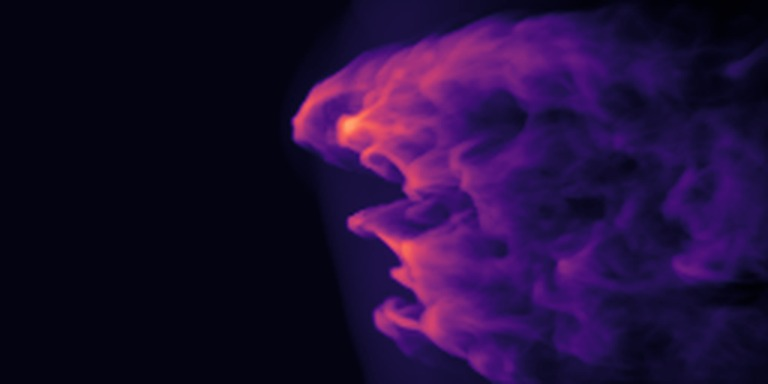

THE CLOUD-CRUSHING COLLECTION
One cloud.
Different outcomes.
Follow a cloud through a wind. Explore how numerical methods shape its evolution, one saved state at a time.
Explore the collection ↓Enter the 3D studio ↗
ENZO / χ 1000EDGE-ON · 5 tcc ↗
—3D run entries
—numerical methods
—films & variants
Real saved outputs.
Historical and bounded results, clearly distinguished.
FIND YOUR PERSPECTIVE
The simulation library
Loading the collection…
No matches yet.
Try another code, or clear your filters to see the whole collection.
LOOK CLOSER
Explore freely.
Compare carefully.
The 3D studio lets you rotate, compare, and capture a view. Recent results also include edge-on and face-on projections, with downloadable films and full-size images.
Display products are derived from saved outputs. Bounded numerical acceptance is not convergence or a physical accuracy ranking. Shared resolution labels do not guarantee matching initial conditions. Film duration is playback time, not computation time.
Read the methods & limitations ↗Open the original archive ↗